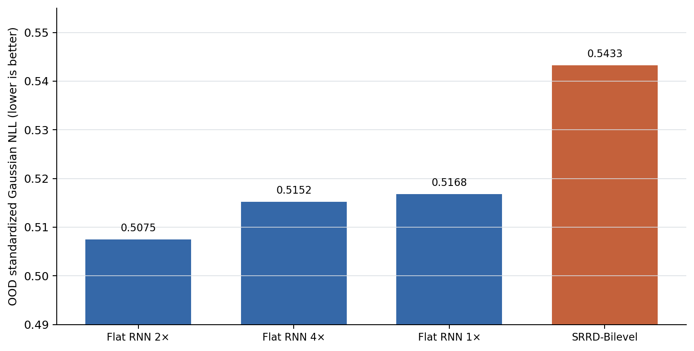
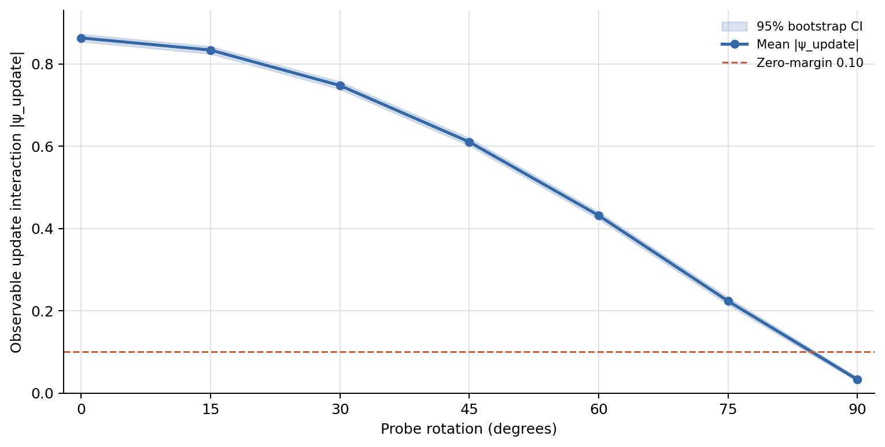

R_OOD
1.07
SRRD NLL / strongest baseline NLL。0.90 以下が支持条件。
Data Analytics report
Latent-rule-blind confirmatory simulation with state matching, randomized probes, OOD intervention, ablations, and capacity attacks.
結果報告書 · 2026-08-09
最終判定は C — history dependence survives, SRRD decomposition does not である。true-SRRD/aligned generator では履歴順序と slow-update の必要性、History × probe の相互作用、観測結合境界はいずれも検出された。しかし主評価の R_OOD は 1.0708 （95% CI 1.0670–1.0746）で、事前規定した 0.90 以下に届かず、SRRD-Bilevel は最強 baseline より約 7.1% 高損失だった。4× flat RNN にも負けたため、履歴依存的な生成現象は支持されても、その予測に fast state + slow reconstructive state 分解が固有に必要だとは言えない。
R_OOD
1.07
SRRD NLL / strongest baseline NLL。0.90 以下が支持条件。
R_shuffle
6.57
履歴順序を破壊したときの損失比。1.10 以上が必要。
R_frozen
1.32
slow update を凍結したときの損失比。1.10 以上が必要。
|psi_update|
0.86
History × randomized probe interaction の絶対値。
中心命題は、観測状態を等価化した後でも、SRRD 型再構成が同等以上の容量を持つ flat latent-state、predictive-state、history-control model では再現できない OOD 予測情報を与える、というものだった。G4（OOD superiority）と G8（capacity robustness）が不通過であるため、operationally identified とは判定しない。これは履歴効果そのものの否定ではなく、SRRD 分解の予測上の固有性の反証である。

Source: exact artifact snapshot derived from phase2_seed_metrics.csv.gz.
| Rank | Model | Family | OOD NLL | vs best | Features | Trained params |
|---|---|---|---|---|---|---|
| 1 | Flat RNN 2× | flat_recurrent | 0.51 | 1 | 48 | 300 |
| 2 | Flat RNN 4× | flat_recurrent | 0.52 | 1.02 | 96 | 588 |
| 3 | Flat RNN 1× | flat_recurrent | 0.52 | 1.02 | 24 | 156 |
| 4 | SRRD-Bilevel | bilevel_reconstruction | 0.54 | 1.07 | 24 | 156 |
| 5 | Flat RNN 0.5× | flat_recurrent | 0.93 | 1.83 | 12 | 84 |
| 6 | History-MPC | history_control | 1.72 | 3.39 | 24 | 156 |
| 7 | Adaptive PSR | predictive_state | 1.73 | 3.41 | 24 | 156 |
| 8 | Markov-SSM | current_state | 1.78 | 3.52 | 24 | 156 |
履歴順序を破壊すると損失は 6.57 倍、slow update を凍結すると 1.32 倍になり、|psi_update| は 0.8616（95% CI 0.8573–0.8659）だった。したがって被検 SRRD モデルが順序構造と更新項を実際に利用していたことは確認できる。同時に、より単純な flat recurrent predictive state が OOD 予測を上回った。この組合せが分類 C の核心である。
| Generator | |psi| | R_shuffle | R_frozen | Max SMD |
|---|---|---|---|---|
| SRRD aligned | 0.86 | 6.57 | 1.32 | 0.01 |
| SRRD orthogonal | 0.04 | 1.01 | 1 | 0.01 |
| Frozen-rule | 0.04 | 3.61 | 1 | 0.01 |
| Order-invariant | 0.04 | 1.01 | 1 | 0.01 |
| Flat Markov latent | 0.04 | 1.01 | 1 | 0.01 |
| Persistent history-only | 0.04 | 4.71 | 1 | 0.01 |
| Residual imbalance | 0.04 | 1.01 | 1 | 0.48 |
| Pure null | 0.04 | 1.01 | 1 | 0.01 |
観測 probe を 0° から 90° へ回転すると、結合 cosine の低下に伴って |psi_update| と |kappa_obs| は単調に消失した。両者と coupling の Spearman rho は 1.00。90° では |psi_update|=0.0328、R_shuffle=1.0114 まで縮小した。よって SRRD exists implies always observable は Phase 2 でも成立しない。

Source: exact artifact snapshot from phase2_rotation_summary.csv.
aligned generator の最大 SMD は 0.0108（UCI 0.0112）、energy distance は 0.0031（UCI 0.0031）、paired permutation の棄却率は 0.085 で、事前閾値 0.10 を満たした。一方、residual-imbalance confound は SMD 0.4822、棄却率 1.00 と明確に検出された。Gate 1 の棄却率は preregistration が point-rate 上限を規定していたため point rate で判定した。初期 evaluator が bootstrap UCI を誤って適用した点は修正ログへ残し、閾値・データ・モデルを変えずに全実験を決定論的再実行した。
| Gate | Test | Criterion | Observed | Result |
|---|---|---|---|---|
| G0 | Data integrity | 0 violations | 0 | PASS |
| G1 | State equivalence | SMD/energy UCI <= .10; reject <= .10 | 0.0112 / 0.0031 / 0.085 | PASS |
| G2 | Positive control | aligned detected | |psi| LCI 0.8573 | PASS |
| G3 | Negative specificity | designated nulls within margins | all pass | PASS |
| G4 | OOD superiority | UCI(R_OOD) <= .90 | 1.07 | FAIL |
| G5 | Order necessity | LCI(R_shuffle) >= 1.10 | 6.5 | PASS |
| G6 | Update necessity | LCI(R_frozen) >= 1.10 | 1.31 | PASS |
| G7 | Update interaction | LCI(|psi|) >= .20 | 0.86 | PASS |
| G8 | Capacity robustness | UCI(SRRD/RNN 4×) <= .90 | 1.06 | FAIL |
| G9 | Imbalance robustness | confound separated | SMD .4822; reject 1.00 | PASS |
| G10 | Observation boundary | signature -> 0 | rho 1.00; 90° |psi| .0328 | PASS |
評価モデルが受け取るのは history, x_obs, c1, u2 のみで、true rule、latent rule、slow state、scenario mechanism は禁止した。H1=A^6B^6C^4 と H2=B^6A^6C^4 は同じ回数と共通 suffix を持つ。C1 は probe/sham を無作為化し、学習 C2 は {-0.8,-0.4,0.4,0.8}、OOD C2=1.2 は model selection・early stopping・tuning から完全 hold-out した。8 generator × 計 2,400 scenario-seed runs、観測回転 560 runs、seed-level paired bootstrap 4,000 回である。Primary loss は 6 horizon の standardized Gaussian NLL。nominal 1× models は 24 features / 156 trainable readout parameters に揃えた。
別 validator が preregistration SHA-256、seed ID 一意性、OOD contamination、全 ratio、nominal/4× budget、禁止入力、11 gates、最終分類を再計算し、全検査に合格した。最大 ratio 再計算誤差は 1.70e-11。凍結 preregistration hash は 2a5016997d7c6dac04517c9e1568af13ea2e9413f35139cd1d2e957fdb728f05 である。
公開データを確認したが、履歴順序割付、観測 state matching 変数、randomized C1 probe/sham、frozen OOD C2、post-intervention outcome を同時に満たす confirmatory dataset は見つからなかった。Nano-drone benchmark は実世界の多入出力 OOD trajectory benchmark として二次評価に適するが、history randomization と C1/sham がない。Bouc-Wen は hysteresis を持つため history-without-reconstruction の負例候補、Silverbox は非線形 system identification の二次 benchmark 候補である。したがって外部データは参照・適格性監査に使い、Phase 2D 再現と誤表示しない。
本結果は synthetic latent-blind screening であり、実世界の SRRD 不在を示さない。flat recurrent model は固定 reservoir core + 学習 readout で、完全学習 GRU/LSTM ではない。Adaptive PSR と History-MPC も feature baseline であり、理論上の完全実装ではない。それでも SRRD がこれらより優位でなかった事実は、現実装に有利な解釈を与えても中心命題を救わない。また真の r_t はモデルへ隠したが generator 設計は人工的であり、latent parameter identifiability や unique ontology of self は検証対象外である。
Eight generator scenarios; paired seed-level estimates and 95% percentile-bootstrap intervals.
Seven preregistered observation rotations, 80 seeds per angle, with 95% bootstrap intervals.
Claim, generators, model budgets, interventions, thresholds, and six-class decision rule frozen before the confirmatory run.
Recorded outcomes for preregistered gates G0 through G10 and the six-class final decision.
Independent recomputation of hashes, ratios, model budgets, forbidden inputs, gates, and final classification.
Pre-outcome audit of Nano-drone, Bouc-Wen, and Silverbox against the confirmatory Phase 2D design requirements.
User-provided Phase 1 report establishing SRRD/CVP separation and motivating the black-box test.
User-provided audit defining state matching, rule-update interventions, and equivalent-capacity attacks.